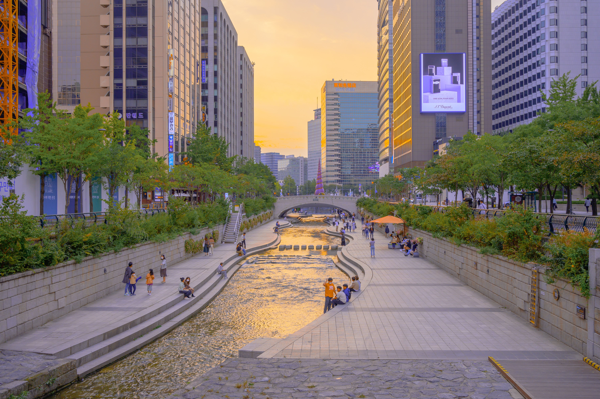

Best things to do in Seoul
The best things to do in Seoul stretch far beyond K-pop and record-breaking Netflix shows.
N Seoul Tower
Every knows that the best way to get your bearings with a city is to head up to the nearest really, really tall thing and take it all in. The N Seoul Tower is hundreds of metres above sea level and looks a little like a rocket taking off from the top of Namsan mountain. Its panoramas over Seoul are unlike any other: and, better yet, thanks to a lift and cable car, it’ll leave your legs with plenty of energy for the rest of your time here
Gwangjang Market
One of the oldest and largest traditional markets in Seoul, most famous for its street food market where you can find all manner of Korean snacks. It’s the most convenient place to sample a wide variety of Korean food, from tteokboki (sweet and spicy rice cakes), bindaetteok (mung bean pancakes), and mayak gimbap (seaweed rolls). Don’t forget to wash it all down with some makgeolli (rice wine).
Dongdaemun
The beating heart of Seoul’s no-holds-barred shopping culture. It’s got a 24-hour shopping complex, wholesale outlets, an underground shopping centre, and a bulbous, space-age silver cultural hub designed by world-famous architect Zaha Hadid. Many boutiques in Seoul and even neighbouring countries source their stock from Dongdaemun, making it a goldmine for thrifty, fashion-conscious shoppers. Everything you want can be found off the main shopping road, Eulji-ro – including pojangmacha (street stalls) serving snacks and soju.
Insa-dong
Located in the historic district of Jongno-gu, Insa-dong is an arty neighbourhood where traditional meets modern. Known for its plethora of galleries, this is the perfect place to take a quick break between sightseeing. Insadong-gil, the neighbourhood’s main street, is a great place to pick up some traditional Korean souvenirs – especially during the weekly Saturday market. Make sure to visit Ssamziegil, a multi-storey shopping complex which houses over 70 shops, galleries, and cafés.
Hongdae
The buzzy area around Hongik University where all of Seoul’s tastemakers congregate. Hongdae is known for being the city’s youth culture hub, with a strong indie music and nightlife scene, and a regular arts and crafts market. Why go? Besides the hipper-than-thou street style shops and artisanal cafés, Hongdae’s main road – Hongik-ro – is home to countless bars and clubs where you can party the night away. Line your stomach at the nearby Oksang Dalbit with some delectable garlic pepper chicken.